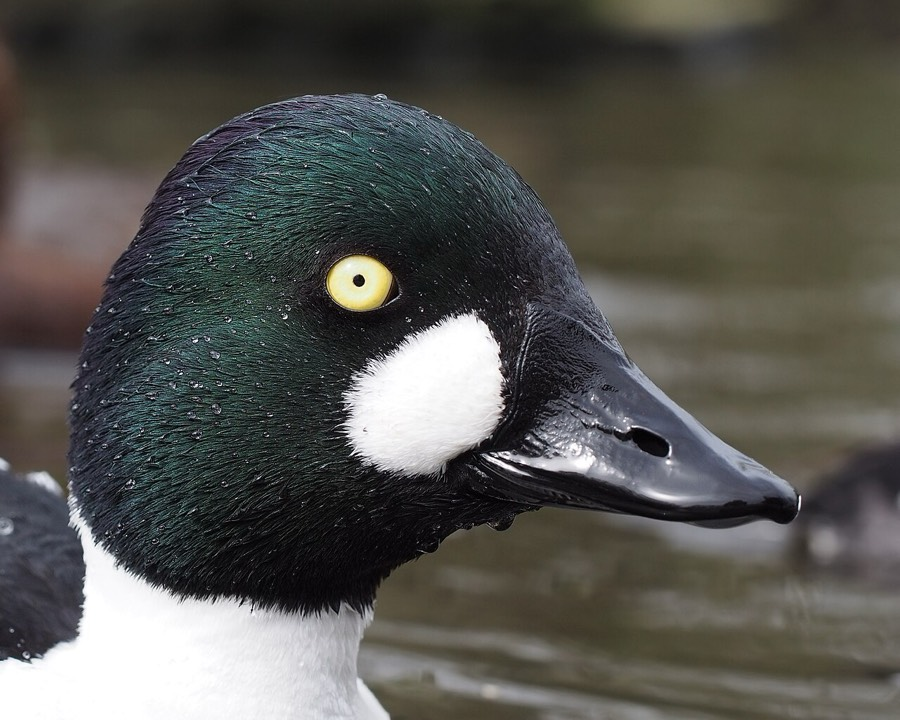

Common Goldeneye
Bucephala clangula
- Kind
- bird
- Native to Vermont
- yes
- Legal status
- Seen in Vermont in spring, summer and fall on the Champlain Valley checklist; whether it breeds in Vermont was not checked (the Atlas page was not read). (checked 2026-11-01)
Listen
Male song: a 22-second clip, cut from a 22-second recording (trimmed, with a short fade-out, and saved as a small MP3), so it plays without an internet connection. Recording by Pascal Christe, CC BY-SA 4.0, on Wikimedia Commons, where the whole recording is (an internet connection is needed to open it).
Pictures

Names
Common Goldeneye (Bucephala clangula).
Range and habitat
Listed in spring, summer and fall on the Champlain Valley checklist. Breeding habitat elsewhere: forested lakes and rivers with large trees near clear, cold water (Audubon). Winter: shallow, protected bays and estuaries, and some rivers and lakes.
How to identify (by season; look-alikes and the key difference)
18 to 23 inches. The breeding male has a black head (glossy green in good light) and back, white chest and sides, and a rounded white spot in front of the yellow eye; the female has a brown head contrasting with a gray body and a bill that often has a yellow tip. Fast flight with whistling wings, which gives the hunters' nickname 'Whistler'. Males give a high-pitched courtship call; females a low quack (Audubon).
Through the year
Dates are typical for Vermont and shift with elevation and year; "approximate" means the source gave a season and the dates are a translation of it.
| When | What | Look for | What to do | Dates |
|---|---|---|---|---|
| Sep 20 to Nov 30 | migration (watch) | Waterfowl migrations at Dead Creek begin in late September and continue through November (Fish & Wildlife brochure); Audubon says goldeneyes generally migrate late in fall and early in spring. | - | approximate |
Signs on the land (tracks, scat, browse, nests, holes, calls)
Fast flight with whistling wings (Audubon); the sources read name no other sign.
Role in the forest (what it eats, what eats it, what it needs)
Mostly crustaceans (crayfish and others), mollusks, small fish and frogs; aquatic insects are the main summer food; pondweeds are eaten, especially in fall; it forages mostly underwater (Audubon). Nests in cavities in large trees 5 to 60 feet up, and will use nest boxes; 8 to 11 eggs incubated about 29 to 30 days; the young leave the nest 1 to 2 days after hatching and are led to water (Audubon).
What helps it thrive (light, soil, shelter, food and the trees it uses)
Large old trees with cavities near clear, cold water, and nest boxes where those are lacking: Audubon says numbers have risen in some areas where nest boxes are provided and gives boxes as the only helpful action it names. The sources read say nothing about Vermont specifics.
Managing for it (habitat practices) and living with it (conflicts and damage)
Keep large cavity trees near clear lakes and rivers; see Wildlife Habitat in Harvest Planning. Ducks, geese and mergansers have hunting seasons set each year by Vermont Fish & Wildlife in three zones (Lake Champlain, Interior Vermont and Connecticut River). The 2024-25 dates and bag limits are in the Department's 2024 Waterfowl Program Legislative Report (read as text 2026-11-01); they change each year, so check the current Vermont hunting regulations before acting on them. See Waterfowl and Migration in Vermont for the Vermont season table, where to watch, and what helps waterfowl on your land.
Legal status
Native birds are covered by the federal Migratory Bird Treaty Act, which prohibits taking (killing, capturing, selling, trading and transport are named) protected migratory birds without prior authorization (U.S. Fish and Wildlife Service page, read through a summarizing fetch 2026-10-31). The Act applies to native species named in the treaties (50 CFR 10.13); that list was not checked for this species.
Sources
- Vermont Fish & Wildlife, Central Champlain Valley WMAs checklist: https://vtfishandwildlife.com/sites/fishandwildlife/files/documents/WatchWildlife/Champlain-Valley-WMA-Checklist.pdf (read as text 2026-11-01)
- Vermont Fish & Wildlife, Dead Creek WMA brochure: https://vtfishandwildlife.com/sites/fishandwildlife/files/documents/WatchWildlife/dead-creek-brochure-web.pdf (read as text 2026-11-01)
- Audubon, Common Goldeneye: https://www.audubon.org/field-guide/bird/common-goldeneye (summarizing fetch 2026-11-01)
What this page is based on
Kind of source: primary-agency and atlas (Vermont Fish & Wildlife, Vermont Breeding Bird Atlas, Audubon)
What was read: Vermont Fish & Wildlife Champlain Valley WMA checklist and Dead Creek brochure (read as text, 2026-11-01); Audubon Guide to North American Birds (summarizing fetch). No Vermont Breeding Bird Atlas page was read for this species, so whether it nests in Vermont is not stated. That it is among Vermont's top harvested ducks is from a search summary, not read. The photograph's place is not stated.
Last checked: 2026-11-01
Vermont Woodland Owner's Reference, built 2026-11-09. Rules and dates here are summaries, not legal advice; dates shift with elevation and year. Photo and recording credits · The text is by Loop Works, CC BY 4.0 (pictures and recordings keep their own licenses) · Note: _reference/US-VT/Species/Common Goldeneye.md